Separate platform rules from extensions
Structured CPQ behavior around platform capabilities while using Apex and SOQL where custom logic and data access were required.
Case study 01 / Salesforce platform
A production Salesforce delivery that shortened enterprise quoting while improving observability, regression confidence, and release quality.
01 / Problem
The delivery had to translate sales requirements into maintainable CPQ behavior while preserving data integrity, release confidence, and supportability in a live enterprise environment.
Because the underlying client implementation is confidential, this case study focuses on the engineering responsibilities, decisions, and measured results rather than proprietary objects or business rules.
02 / Architecture
The solution joined CPQ configuration, Apex and SOQL extensions, reusable Lightning components, integration-backed analytics, telemetry, automated regression, and CI/CD quality gates.

Sanitized architecture. Client-specific data models, pricing rules, and integration contracts are intentionally omitted.
03 / Decisions
Structured CPQ behavior around platform capabilities while using Apex and SOQL where custom logic and data access were required.
Created Lightning components that reduced duplication and made recurring workflows more consistent for users.
Connected analytics and telemetry to surface latency and production behavior rather than treating deployment as the finish line.
Coordinated Selenium coverage and CI/CD quality gates across three defect-free releases.
04 / Outcome
The combined workflow reduced quote cycle time by 25%, rework by 30%, data latency by 50%, and production incidents by 35%. The evidence is also summarized in the downloadable resume.